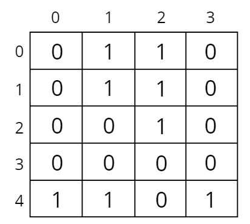
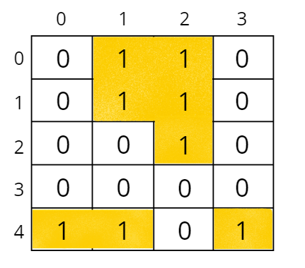
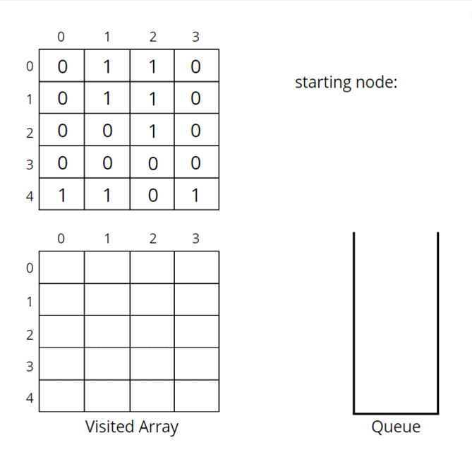
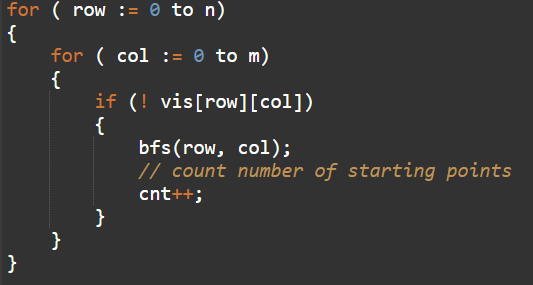
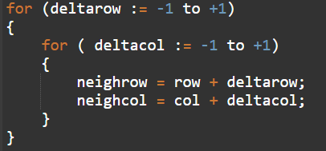

Problem Statement: Given a grid of size NxM (N is the number of rows and M is the number of columns in the grid) consisting of '0's (Water) and ‘1's(Land). Find the number of islands.
Note: An island is surrounded by water and is formed by connecting adjacent lands horizontally or vertically or diagonally i.e., in all 8 directions.
Pre-req: Connected Components, Graph traversal techniques
Examples:
Example 1:
Input:
Output: 3
Explanation:
There are 3 islands as the different components are surrounded by water (i.e. 0), and there is no land connectivity in either of the 8 directions hence separating them into 3 islands.
Example 2:
Input:
Output: 1
Explanation:
All lands are connected. So, only 1 island is present.
Solution
Disclaimer: Don't jump directly to the solution, try it out yourself first.
Intuition:
An island is surrounded by water and is formed by connecting adjacent lands horizontally or vertically or diagonally i.e., in all 8 directions.
The question arises how can this problem be solved using a graph? Try to think of all the elements as a node or a vertex, we can observe they are connected in some way as all 8 directions connectivity is allowed. If we start a traversal algorithm, from a particular 1 (land) it will make sure it traverses the nearest 1 (land). So, one traversal with a starting point will cover an island. If we do 3 traversals then we will have 3 starting nodes, anyone can be considered as a starting node in an island, and make sure it visits everyone. In the following example, if we take 3 starting nodes we will be able to touch all the pieces of land. Hence, one starting node makes sure it touches all the connected lands. The basic idea is that “one starting node represents one island”. So, we just need to figure out the number of starting points.
Approach:
In any traversal technique, we have one starting node and it traverses all the nodes in the graph. We know about both the traversals, Breadth First Search (BFS) and Depth First Search (DFS). We can use any of the traversals to solve this problem, in our case we will be using BFS.
The algorithm steps are as follows:
- The pairs of row and column (<row, column>) will represent the node numbers.
- For BFS traversal, we need a queue data structure and a visited array. Create a replica of the given array, i.e., create another array of the same size and call it a visited array. We can use the same matrix, but we will avoid alteration of the original data.
- In the queue, insert a vertex (pair of <row, column>) and mark it as visited.
- While BFS traversal, pop out an element from the queue and travel to all its neighbours. In a graph, we store the list of neighbours in an adjacency list but here we know the neighbours are in 8 directions.
- We go in all 8 directions and check for unvisited land neighbours. To travel in 8 directions we will use nested loops, you can find the implementation details in the code.
- BFS function call will make sure that it starts the BFS call from that unvisited land, and visits all the nodes that are on that island, and at the same time, it will also mark them as visited.
- Since the nodes travelled in a traversal will be marked as visited, they will no further be called for any further BFS traversal.
- Keep repeating these steps, for every land that you find unvisited, and visit the entire island.
- Add a counter variable to count the number of times the BFS function is called, as in this way we can count the total number of starting nodes, which will give us the number of islands.
In the following example there are 3 islands, i.e., we will have 3 starting nodes.


Let us understand how BFS traverses the nodes and covers an island.

The above illustration illustrates the traversal of the starting node (0, 1). Similarly, we will have BFS traversal for (4, 0) and (4, 3) starting nodes. So, 3 starting nodes represent 3 islands.
How to decide the starting points?
Start from (0, 0), if you get water (i.e., 0) move to the next index, otherwise, if you find land (i.e., 1) then call BFS traversal for that pair (<row, column>), which will be a starting node. Repeat the step, and call BFS traversal only for unvisited land pairs (<row, column>).
Pseudo Code:

How do set boundaries for 8 directions?
The 8 neighbours will have the following indexes:
Now, either we can apply 8 conditions or follow the following method. From the above image, it is clear that the row can be row-1, row, or row+1,i.e., the delta row varies from -1 to 1. Similarly, the delta column varies from -1 to 1. So we can apply the same logic to find the neighbours of a particular pair (<row, column>).

Code:
#include <bits/stdc++.h>
using namespace std;
class Solution {
private:
void bfs(int row, int col, vector<vector<int>> &vis, vector<vector<char>>&grid) {
// mark it visited
vis[row][col] = 1;
queue<pair<int,int>> q;
// push the node in queue
q.push({row, col});
int n = grid.size();
int m = grid[0].size();
// until the queue becomes empty
while(!q.empty()) {
int row = q.front().first;
int col = q.front().second;
q.pop();
// traverse in the neighbours and mark them if its a land
for(int delrow = -1; delrow<=1;delrow++) {
for(int delcol = -1; delcol <= 1; delcol++) {
int nrow = row + delrow;
int ncol = col + delcol;
// neighbour row and column is valid, and is an unvisited land
if(nrow >= 0 && nrow < n && ncol >= 0 && ncol < m
&& grid[nrow][ncol] == '1' && !vis[nrow][ncol]) {
vis[nrow][ncol] = 1;
q.push({nrow, ncol});
}
}
}
}
}
public:
// Function to find the number of islands.
int numIslands(vector<vector<char>>& grid) {
int n = grid.size();
int m = grid[0].size();
// create visited array and initialise to 0
vector<vector<int>> vis(n, vector<int>(m, 0));
int cnt = 0;
for(int row = 0; row < n ; row++) {
for(int col = 0; col < m ;col++) {
// if not visited and is a land
if(!vis[row][col] && grid[row][col] == '1') {
cnt++;
bfs(row, col, vis, grid);
}
}
}
return cnt;
}
};
int main() {
// n: row, m: column
vector<vector<char>> grid
{
{'0', '1', '1', '1', '0', '0', '0'},
{'0', '0', '1', '1', '0', '1', '0'}
};
Solution obj;
cout << obj.numIslands(grid) << endl;
return 0;
}
Output: 2
Time Complexity ~ O(N² + NxMx9), N² for the nested loops, and NxMx9 for the overall DFS of the matrix, that will happen throughout if all the cells are filled with 1.
Space Complexity: O(N²) for visited array max queue space O(N²), If all are marked as 1 then the maximum queue space will be N².
import java.util.*;
class Solution {
private void bfs(int ro, int co, int[][] vis, char[][] grid) {
vis[ro][co] = 1;
Queue<Pair> q = new LinkedList<Pair>();
q.add(new Pair(ro, co));
int n = grid.length;
int m = grid[0].length;
// until the queue becomes empty
while(!q.isEmpty()) {
int row = q.peek().first;
int col = q.peek().second;
q.remove();
// traverse in the neighbours and mark them if its a land
for(int delrow = -1; delrow<=1;delrow++) {
for(int delcol = -1; delcol <= 1; delcol++) {
int nrow = row + delrow;
int ncol = col + delcol;
// check if neighbour row and column is valid, and is an unvisited land
if(nrow >= 0 && nrow < n && ncol >= 0 && ncol < m
&& grid[nrow][ncol] == '1' && vis[nrow][ncol] == 0) {
vis[nrow][ncol] = 1;
q.add(new Pair(nrow, ncol));
}
}
}
}
}
// Function to find the number of islands.
public int numIslands(char[][] grid) {
int n = grid.length;
int m = grid[0].length;
int[][] vis = new int[n][m];
int cnt = 0;
for(int row = 0; row < n ; row++) {
for(int col = 0; col < m ;col++) {
// if not visited and is a land
if(vis[row][col] == 0 && grid[row][col] == '1') {
cnt++;
bfs(row, col, vis, grid);
}
}
}
return cnt;
}
public static void main(String[] args)
{
char[][] grid = {
{'0', '1', '1', '1', '0', '0', '0'},
{'0', '0', '1', '1', '0', '1', '0'}
};
Solution obj = new Solution();
System.out.println(obj.numIslands(grid));
}
}
class Pair {
int first;
int second;
public Pair(int first, int second) {
this.first = first;
this.second = second;
}
}
Output: 2
Time Complexity ~ O(N² + NxMx9), N² for the nested loops, and NxMx9 for the overall DFS of the matrix, that will happen throughout if all the cells are filled with 1.
Space Complexity: O(N²) for visited array max queue space O(N²), If all are marked as 1 then the maximum queue space will be N².
Special thanks to Vanshika Singh Gour for contributing to this article on takeUforward. If you also wish to share your knowledge with the takeUforward fam, please check out this article. If you want to suggest any improvement/correction in this article please mail us at write4tuf@gmail.com